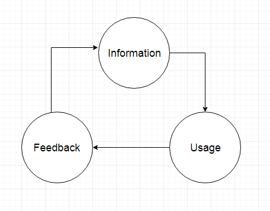

Introduction.
Probable you already know something about programming and particularly about Java. I think you have read a few books about it.
But you still haven’t got any programming jobs.
In addition, you just don’t try to get jobs, because you don’t feel confident
when you see the example of test tasks or when you look at interview questions list.
I know about it, because I was the same as you. Now let me introduce myself briefly and I will tell you more details about this course.
My name is Peter. I am a Java developer. I started my professional career in 2008
when I was a student at the local university. Since this year I have been involved in 12 different projects.
I had different positions in this projects, as core developer, senior developer, team lead, architecture.
Currently I have an own project, which help to hire new programmers in easy way.
So I have a huge amount of experience in programming and I want to share my skills with you.
Roadmap to become a Java developer.
First, you need to identify the roadmap. When I started my journey I have not idea what to do. I have read a book about Java. I was “Thinks in Java by Bruck Ekkel”. After I finished it I realize then I still don’t know what apps you need Java. Then I made quickly research about what kind of app can be made by Java. I got that it was kind of website with large background ecosystem. I found some example of it. This is social nets like facebook.com and so on.
Then I realized that I read in this book, it is only a small piece of big cake. If you want to become a profession programmer I should read more books about it.
I started to look more information about what I should read. I found too many of it. If I would read it all I had spent 10 years on it. At the least I was not sure about a final result.
I had a luck, because I had a friend how gave me piece of advices about what kind of technologies I should know about. What I got from this situation. It was then if you want to get a goal you should know to get there. It is a roadmap.
In this course I will give you my roadmap. We will go step by step from beginner topic of java to some complex topic. I’ll hold your hand along this way.
Structure.
I have taught people how to code a Java application already 3 years. I know the best way how you can become a profession programmer.
You should do 3 things.
1. You should get information.
2. You should try to use it.
3. You should get a feedback about your result.
You should do it repetitive.
Let’s look at the diagram below.

For this reason I do my course the same way.
The full course consists from 31 lessons. Each lesson has 3 sections.
1. Theoretical material. It is essential information about particular topic. For example, conditional statements look statements.
2. Practical. It is time to show how to use it in real project. I will show you full example with explanation. You should run this code and try to figure it out.
3. Exercises. If you want to get the result, you should do each exercise.
4. Feedback. You should put your code under this video. I promise I give a feedback to each comment.
Conclusion.
We are going to finish out lesson. How I told above each lesson has exercises. It is time to give you’re the exercises. But in this time I will give you the right answer. I do it because you need right mindset. It is the same big key of success.
Exercise #1.You should define the reason why you want to learn Java.
Answer #1. You want to become a profession programmer. This question is about your motivation. I saw many different answers. Some of them told me they want to create app which they can sell and earn money. Another told they want to create games which they can sell and earn money. So of all them just want to earn money. This is not sincere goal. For this reason all of them fault. Your passion should be to write a code not earn money. In such situation I’ll get a success.
Exercise #2.You should define the deadline.
Answer #3. This course counts on 3-6 months. A profession programmer code every day. It is his passion. So if you do a code every day you will go as fast as can. But to be honest many of you will do practice hardly every one time then week. So it takes years to finish this course. This course consists from 31 lessons. I recommend to take a temp of this course by 3 day on each lesson. So you will keep it, it takes 3 months. It is the best temp.
Exercise #3.You should define the goal. It is a point how you can identify the process of this learning period.
Answer #3. You get a job as java programmer. You should know when you can verify when you get a goal.